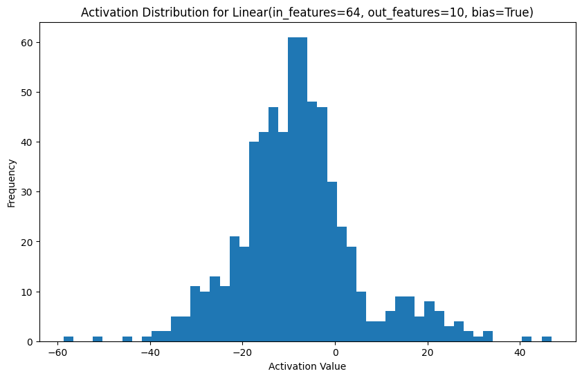

!pip install torchviz torch transformers torchvision2 Explorations in Superposition

Let’s make a sinple neural network of two layers and a fully-connected layer.
import torch
import torch.nn as nn
import torch.optim as optim
from torchvision import datasets, transforms
device = torch.device("cuda" if torch.cuda.is_available() else "cpu")
class SimpleNet(nn.Module):
def __init__(self):
super(SimpleNet, self).__init__()
self.fc1 = nn.Linear(28 * 28, 128) # 784 input features
self.fc2 = nn.Linear(128, 64)
self.fc3 = nn.Linear(64, 10)
def forward(self, x):
x = x.view(x.size(0), -1) # Flatten the input
x = torch.relu(self.fc1(x))
x = torch.relu(self.fc2(x))
x = self.fc3(x)
return x
# Create the model and move it to GPU
model = SimpleNet().to(device)There are various ways of building a more intuitive understanding of the model we just made. The simplest is to print its architecture:
print(model)SimpleNet(
(fc1): Linear(in_features=784, out_features=128, bias=True)
(fc2): Linear(in_features=128, out_features=64, bias=True)
(fc3): Linear(in_features=64, out_features=10, bias=True)
)We can also use the torchviz library to create a helpful visualization:
from torchviz import make_dot
# Same size as input data
dummy_input = torch.randn(1, 28, 28).cuda()
graph = make_dot(model(dummy_input), params=dict(model.named_parameters()))
graph.render("Model", format="png", cleanup=True)'Model.png'from IPython.display import Image, display
# Display the image in the notebook
image_path = "Model.png"
display(Image(filename=image_path))To keep things simple and accessible on a Colab with free resources (the T4 GPU), we will use the canonical MNIST dataset of handwritten digits, 0-9.
Our training loop will run for five epochs and should complete within a few minutes on the T4.
# Load and preprocess the MNIST dataset
transform = transforms.Compose([transforms.ToTensor(), transforms.Normalize((0.1307,), (0.3081,))])
train_dataset = datasets.MNIST(root='./data', train=True, download=True, transform=transform)
train_loader = torch.utils.data.DataLoader(train_dataset, batch_size=64, shuffle=True)
# Define loss function and optimizer
criterion = nn.CrossEntropyLoss()
optimizer = optim.Adam(model.parameters())
# Training loop
num_epochs = 5
for epoch in range(num_epochs): # 5 epochs for demonstration
for batch_idx, (data, target) in enumerate(train_loader):
data, target = data.to(device), target.to(device)
optimizer.zero_grad()
output = model(data.view(data.size(0), -1))
loss = criterion(output, target)
loss.backward()
optimizer.step()
if (epoch + 1) % 1 == 0:
print(f'Epoch [{epoch+1}/{num_epochs}], Loss: {loss.item():.4f}')Epoch [1/5], Loss: 0.0020
Epoch [2/5], Loss: 0.0002
Epoch [3/5], Loss: 0.0047
Epoch [4/5], Loss: 0.0026
Epoch [5/5], Loss: 0.00042.0.1 Visualizing Weight Matrices
One way to observe superposition is by visualizing the weight matrices of our layers. We can plot these as heatmaps:
In these heatmaps, look for:
Patterns or structure in the weights Areas of high positive or negative values Regions where weights seem to cancel each other out
import matplotlib.pyplot as plt
import seaborn as sns
def plot_weight_matrix(weight_matrix, title):
plt.figure(figsize=(8, 6))
sns.heatmap(weight_matrix.cpu().detach().numpy(), cmap='coolwarm', center=0)
plt.title(title)
plt.show()
plot_weight_matrix(model.fc1.weight, "First Layer Weights")
plot_weight_matrix(model.fc2.weight, "Second Layer Weights")2.0.2 Analyzing Activations
Another approach is to analyze the activations of neurons in response to different inputs:
def get_activations(model, input_data):
activations = {}
def hook_fn(module, input, output):
activations[module] = output.detach()
for name, module in model.named_modules():
if isinstance(module, nn.Linear):
module.register_forward_hook(hook_fn)
input_data = input_data.to(device)
model(input_data)
return activations
# Get a batch of test data
test_loader = torch.utils.data.DataLoader(
datasets.MNIST(root='./data', train=False, transform=transform),
batch_size=64, shuffle=True)
test_data, _ = next(iter(test_loader))
activations = get_activations(model, test_data.view(test_data.size(0), -1))
# Plot activation distributions
for name, activation in activations.items():
plt.figure(figsize=(10, 6))
plt.hist(activation.cpu().numpy().flatten(), bins=50)
plt.title(f"Activation Distribution for {name}")
plt.xlabel("Activation Value")
plt.ylabel("Frequency")
plt.show()
2.0.3 Measuring Superposition
To quantify superposition, we can use techniques like Singular Value Decomposition (SVD) on the weight matrices.
SVD is a technique in linear algebra to distill matrices into simpler component matrices.
In this example, we take the following steps (also commented in the code):
- Compute total variance, which is the sum of squared singular values
- Calculate the cumulative variance of each singular value
2.0.3.1 Interpretation
The ‘effective rank’ is a measure of superposition. A lower effective rank indicated less of the phenonemon. A higher effective rank suggests more, implying the weight matrix requires more dimensions to be accurately represented.
import numpy as np
def analyze_superposition(weight_matrix):
# Here's the SVD calculation. The 'S' array contains the
# singular values in descending order.
U, S, Vt = np.linalg.svd(weight_matrix.cpu().detach().numpy())
# Plot singular values
plt.figure(figsize=(10, 6))
plt.plot(S)
plt.title("Singular Values of Weight Matrix")
plt.xlabel("Index")
plt.ylabel("Singular Value")
plt.yscale('log')
plt.show()
# Calculate 'effective rank', which is a measure of superposition.
# This computes the total variance (sum of squared values), then
# calculates the cumulative variance explained by each singular value.
total_variance = np.sum(S**2)
cumulative_variance = np.cumsum(S**2) / total_variance
effective_rank = np.sum(cumulative_variance < 0.99) # 99% of variance
print(f"Effective Rank: {effective_rank}")
analyze_superposition(model.fc1.weight)
analyze_superposition(model.fc2.weight)Effective Rank: 110Effective Rank: 54In our SimpleNet model, we defined the following architecture:
class SimpleNet(nn.Module):
def __init__(self):
super(SimpleNet, self).__init__()
self.fc1 = nn.Linear(784, 128)
self.fc2 = nn.Linear(128, 64)
self.fc3 = nn.Linear(64, 10)Let’s compare the effective ranks we observed with the actual number of neurons in each layer:
First layer (fc1):
Total neurons: 128 Effective rank: 113 Ratio: 113 / 128 ≈ 0.883 or 88.3%
Second layer (fc2):
Total neurons: 64 Effective rank: 54 Ratio: 54 / 64 ≈ 0.844 or 84.4%
Interpretation:
First layer (fc1): The effective rank of 113 compared to 128 total neurons suggests that this layer is using about 88.3% of its capacity for unique features, corresponding to a high degree of superposition. So a large number of singular values are needed to explain the variance in the weight matricies.
Second layer (fc2): The effective rank of 54 vs 64 total neurons indicates that this layer is using about 84.4% of its capacity for unique features, showing a slight decrease that may indicate more specialization or feature abstraction in the second layer.
The effective rank gives us an idea of how many “effective features” the layer is representing. A higher effective rank compared to the actual number of neurons suggests neurons are representing multiple features simultaneously, indicating a higher degree of superposition.
2.0.4 Interpreting the Results
When looking at the results, focus on sparse activation patterns, which might indicate specialized neurons. Compare the number of neurons to the effective rank - a large discrepancy suggests a high degree of superposition. Observe how superposition changes across layers. Consider how different input patterns affect the activations and whether this reveals any superposed features.
2.0.5 More layers, more data: CIFAR 100
Let’s explore whether larger datasets and more complex neural network architectures affect the degree of superposition.
We switch to the ResNet50 model, which has 50 layers, including 48 convolutional layers, 1 max pool and 1 average pool layer. It uses skip connections to address the vanishing gradient problem, enabling training of deeper networks.
We will use the CIFAR-100 dataset, which comprises 60,000, 32 x 32 color images in 100 classes.
import torch
import torch.nn as nn
import torch.optim as optim
from torchvision import models, datasets, transforms
from torch.utils.data import DataLoader
import matplotlib.pyplot as plt
import seaborn as sns
import numpy as np
from tqdm import tqdm
# Check if CUDA is available
device = torch.device("cuda" if torch.cuda.is_available() else "cpu")
print(f"Using device: {device}")
# Define transforms
transform_train = transforms.Compose([
transforms.RandomCrop(32, padding=4),
transforms.RandomHorizontalFlip(),
transforms.ToTensor(),
transforms.Normalize((0.5071, 0.4867, 0.4408), (0.2675, 0.2565, 0.2761)),
])
transform_test = transforms.Compose([
transforms.ToTensor(),
transforms.Normalize((0.5071, 0.4867, 0.4408), (0.2675, 0.2565, 0.2761)),
])
# Load CIFAR-100 dataset
train_dataset = datasets.CIFAR100(root='./data', train=True, download=True, transform=transform_train)
test_dataset = datasets.CIFAR100(root='./data', train=False, download=True, transform=transform_test)
# Create data loaders
train_loader = DataLoader(train_dataset, batch_size=128, shuffle=True, num_workers=4, pin_memory=True)
test_loader = DataLoader(test_dataset, batch_size=128, shuffle=False, num_workers=4, pin_memory=True)
# Load pre-trained ResNet50 model and modify for CIFAR-100
model = models.resnet50(pretrained=True)
model.fc = nn.Linear(model.fc.in_features, 100) # 100 classes in CIFAR-100
model = model.to(device)
# Define loss function and optimizer
criterion = nn.CrossEntropyLoss()
optimizer = optim.Adam(model.parameters(), lr=0.001)
# Training loop
num_epochs = 10
for epoch in range(num_epochs):
model.train()
running_loss = 0.0
for inputs, labels in tqdm(train_loader, desc=f"Epoch {epoch+1}/{num_epochs}"):
inputs, labels = inputs.to(device), labels.to(device)
optimizer.zero_grad()
outputs = model(inputs)
loss = criterion(outputs, labels)
loss.backward()
optimizer.step()
running_loss += loss.item()
print(f"Epoch {epoch+1} loss: {running_loss/len(train_loader):.4f}")
# Validation
model.eval()
correct = 0
total = 0
with torch.no_grad():
for inputs, labels in tqdm(test_loader, desc="Validation"):
inputs, labels = inputs.to(device), labels.to(device)
outputs = model(inputs)
_, predicted = outputs.max(1)
total += labels.size(0)
correct += predicted.eq(labels).sum().item()
print(f"Validation Accuracy: {100.*correct/total:.2f}%")
print("Training completed")
Using device: cuda
Downloading https://www.cs.toronto.edu/~kriz/cifar-100-python.tar.gz to ./data/cifar-100-python.tar.gz100%|██████████| 169001437/169001437 [00:04<00:00, 42237449.26it/s]Extracting ./data/cifar-100-python.tar.gz to ./data
Files already downloaded and verified/usr/local/lib/python3.10/dist-packages/torch/utils/data/dataloader.py:557: UserWarning: This DataLoader will create 4 worker processes in total. Our suggested max number of worker in current system is 2, which is smaller than what this DataLoader is going to create. Please be aware that excessive worker creation might get DataLoader running slow or even freeze, lower the worker number to avoid potential slowness/freeze if necessary.
warnings.warn(_create_warning_msg(
/usr/local/lib/python3.10/dist-packages/torchvision/models/_utils.py:208: UserWarning: The parameter 'pretrained' is deprecated since 0.13 and may be removed in the future, please use 'weights' instead.
warnings.warn(
/usr/local/lib/python3.10/dist-packages/torchvision/models/_utils.py:223: UserWarning: Arguments other than a weight enum or `None` for 'weights' are deprecated since 0.13 and may be removed in the future. The current behavior is equivalent to passing `weights=ResNet50_Weights.IMAGENET1K_V1`. You can also use `weights=ResNet50_Weights.DEFAULT` to get the most up-to-date weights.
warnings.warn(msg)
Downloading: "https://download.pytorch.org/models/resnet50-0676ba61.pth" to /root/.cache/torch/hub/checkpoints/resnet50-0676ba61.pth
100%|██████████| 97.8M/97.8M [00:00<00:00, 130MB/s]
Epoch 1/10: 100%|██████████| 391/391 [00:34<00:00, 11.18it/s]Epoch 1 loss: 3.3070Validation: 100%|██████████| 79/79 [00:03<00:00, 24.33it/s]Validation Accuracy: 25.89%Epoch 2/10: 100%|██████████| 391/391 [00:33<00:00, 11.58it/s]Epoch 2 loss: 2.5782Validation: 100%|██████████| 79/79 [00:03<00:00, 19.93it/s]Validation Accuracy: 41.69%Epoch 3/10: 100%|██████████| 391/391 [00:34<00:00, 11.28it/s]Epoch 3 loss: 2.1787Validation: 100%|██████████| 79/79 [00:03<00:00, 23.63it/s]Validation Accuracy: 45.72%Epoch 4/10: 100%|██████████| 391/391 [00:33<00:00, 11.62it/s]Epoch 4 loss: 2.0079Validation: 100%|██████████| 79/79 [00:03<00:00, 25.49it/s]Validation Accuracy: 48.87%Epoch 5/10: 100%|██████████| 391/391 [00:33<00:00, 11.72it/s]Epoch 5 loss: 1.7884Validation: 100%|██████████| 79/79 [00:05<00:00, 15.58it/s]Validation Accuracy: 50.87%Epoch 6/10: 100%|██████████| 391/391 [00:33<00:00, 11.65it/s]Epoch 6 loss: 1.6728Validation: 100%|██████████| 79/79 [00:03<00:00, 25.56it/s]Validation Accuracy: 51.85%Epoch 7/10: 100%|██████████| 391/391 [00:33<00:00, 11.60it/s]Epoch 7 loss: 1.5569Validation: 100%|██████████| 79/79 [00:03<00:00, 25.69it/s]Validation Accuracy: 53.72%Epoch 8/10: 100%|██████████| 391/391 [00:34<00:00, 11.41it/s]Epoch 8 loss: 1.4626Validation: 100%|██████████| 79/79 [00:04<00:00, 15.99it/s]Validation Accuracy: 53.80%Epoch 9/10: 100%|██████████| 391/391 [00:34<00:00, 11.32it/s]Epoch 9 loss: 1.4110Validation: 100%|██████████| 79/79 [00:03<00:00, 24.77it/s]Validation Accuracy: 54.18%Epoch 10/10: 100%|██████████| 391/391 [00:33<00:00, 11.73it/s]Epoch 10 loss: 1.3250Validation: 100%|██████████| 79/79 [00:03<00:00, 24.64it/s]Validation Accuracy: 55.82%
Training completedimport pandas as pd
import matplotlib.pyplot as plt
import seaborn as sns
from collections import OrderedDict
def get_activations(model, loader, num_batches=10):
activations = OrderedDict()
def hook_fn(name):
def hook(module, input, output):
activations[name] = output.cpu().detach()
return hook
# Register hooks for convolutional layers
for name, module in model.named_modules():
if isinstance(module, nn.Conv2d):
module.register_forward_hook(hook_fn(name))
model.eval()
with torch.no_grad():
for i, (inputs, _) in enumerate(loader):
if i >= num_batches:
break
inputs = inputs.to(device)
_ = model(inputs)
return activations
def analyze_superposition(activation, layer_name):
reshaped = activation.reshape(activation.shape[1], -1).numpy()
U, S, Vt = np.linalg.svd(reshaped, full_matrices=False)
total_variance = np.sum(S**2)
cumulative_variance = np.cumsum(S**2) / total_variance
effective_rank = np.sum(cumulative_variance < 0.99) # 99% of variance
return {
'layer_name': layer_name,
'total_channels': activation.shape[1],
'effective_rank': effective_rank,
'ratio': effective_rank / activation.shape[1]
}
# Get activations
activations = get_activations(model, test_loader)
# Analyze superposition for each layer
results = []
for name, activation in activations.items():
results.append(analyze_superposition(activation, name))
# Create DataFrame
df = pd.DataFrame(results)
# Plot effective rank vs layer
plt.figure(figsize=(12, 6))
sns.lineplot(data=df, x=df.index, y='effective_rank', marker='o')
plt.title('Effective Rank vs Layer')
plt.xlabel('Layer Index')
plt.ylabel('Effective Rank')
plt.xticks(df.index, df['layer_name'], rotation=45, ha='right')
plt.tight_layout()
plt.savefig('effective_rank_vs_layer.png')
plt.close()
# Plot ratio of effective rank to total channels
plt.figure(figsize=(12, 6))
sns.lineplot(data=df, x=df.index, y='ratio', marker='o')
plt.title('Ratio of Effective Rank to Total Channels vs Layer')
plt.xlabel('Layer Index')
plt.ylabel('Ratio')
plt.xticks(df.index, df['layer_name'], rotation=45, ha='right')
plt.tight_layout()
plt.savefig('effective_rank_ratio_vs_layer.png')
plt.close()
print(df)
print("\nAnalysis completed. Check the generated PNG files for visualizations.") layer_name total_channels effective_rank ratio
0 conv1 64 59 0.921875
1 layer1.0.conv1 64 49 0.765625
2 layer1.0.conv2 64 53 0.828125
3 layer1.0.conv3 256 139 0.542969
4 layer1.0.downsample.0 256 133 0.519531
5 layer1.1.conv1 64 59 0.921875
6 layer1.1.conv2 64 58 0.906250
7 layer1.1.conv3 256 202 0.789062
8 layer1.2.conv1 64 60 0.937500
9 layer1.2.conv2 64 60 0.937500
10 layer1.2.conv3 256 231 0.902344
11 layer2.0.conv1 128 112 0.875000
12 layer2.0.conv2 128 113 0.882812
13 layer2.0.conv3 512 419 0.818359
14 layer2.0.downsample.0 512 398 0.777344
15 layer2.1.conv1 128 99 0.773438
16 layer2.1.conv2 128 52 0.406250
17 layer2.1.conv3 512 229 0.447266
18 layer2.2.conv1 128 108 0.843750
19 layer2.2.conv2 128 87 0.679688
20 layer2.2.conv3 512 360 0.703125
21 layer2.3.conv1 128 110 0.859375
22 layer2.3.conv2 128 86 0.671875
23 layer2.3.conv3 512 372 0.726562
24 layer3.0.conv1 256 220 0.859375
25 layer3.0.conv2 256 169 0.660156
26 layer3.0.conv3 1024 344 0.335938
27 layer3.0.downsample.0 1024 385 0.375977
28 layer3.1.conv1 256 117 0.457031
29 layer3.1.conv2 256 50 0.195312
30 layer3.1.conv3 1024 78 0.076172
31 layer3.2.conv1 256 121 0.472656
32 layer3.2.conv2 256 44 0.171875
33 layer3.2.conv3 1024 83 0.081055
34 layer3.3.conv1 256 126 0.492188
35 layer3.3.conv2 256 41 0.160156
36 layer3.3.conv3 1024 25 0.024414
37 layer3.4.conv1 256 116 0.453125
38 layer3.4.conv2 256 26 0.101562
39 layer3.4.conv3 1024 25 0.024414
40 layer3.5.conv1 256 116 0.453125
41 layer3.5.conv2 256 32 0.125000
42 layer3.5.conv3 1024 29 0.028320
43 layer4.0.conv1 512 235 0.458984
44 layer4.0.conv2 512 100 0.195312
45 layer4.0.conv3 2048 121 0.059082
46 layer4.0.downsample.0 2048 116 0.056641
47 layer4.1.conv1 512 70 0.136719
48 layer4.1.conv2 512 46 0.089844
49 layer4.1.conv3 2048 43 0.020996
50 layer4.2.conv1 512 62 0.121094
51 layer4.2.conv2 512 58 0.113281
52 layer4.2.conv3 2048 27 0.013184
Analysis completed. Check the generated PNG files for visualizations.2.0.6 Interpretation
With some consistency, we see effective rank ratio decrease as the later network layers learn more abstract representations.
# Display the image in the notebook
image_path = "/content/effective_rank_ratio_vs_layer.png"
display(Image(filename=image_path))3 Interpreting Superposition Analysis Results
Let’s analyze a result for one single convolutional layer
Conv2d(2048, 512, kernel_size=(1, 1), stride=(1, 1), bias=False):
Total channels: 512
Effective Rank: 67
Ratio: 0.13- Layer description:
Conv2d(2048, 512, kernel_size=(1, 1), stride=(1, 1), bias=False)- This is a 2D convolutional layer
- It takes 2048 input channels and outputs 512 channels
- It uses a 1x1 kernel size, which is essentially a pointwise convolution
- Total channels: 512
- In a convolutional neural network, each channel can be thought of as a “neuron” or a feature detector
- So this layer has 512 “neurons” or feature detectors
- Effective Rank: 67
- This is significantly lower than the number of channels (512), indicating a small subset of the available dimensions are needed to explain most of the variance in the weight matrix. This suggests low superposition, since the majority of channels are not contributing to complex representations.
- Ratio: 0.13 (67 / 512)
- This ratio indicates that only about 13% of the available dimensions are being effectively utilized
In summary, this result shows a lower degree of superposition, with the layer using only about 67 effective dimensions to represent information, despite having 512 channels available.